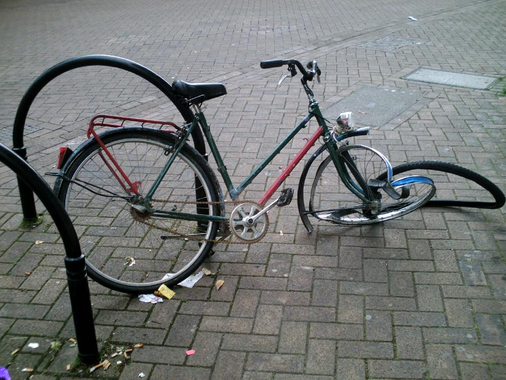

Bike crime is currently at record highs globally, with record numbers of bike thefts occuring globally. For the first time we have options on actually starting to stop bike crime, permanently. The cycling industry has options to go in a direction that will be massively beneficial for both bike users, insurance companies, the police, and bike manufacturers. There's a relatively easy solution to this in the future, however now is the time for the industry to act. Together we can work in partnership to help disconnect bike crime.
Bike theft is a huge issue globally, in the EU alone between three and four MILLION bikes are stolen each year, resulting in 2 out of three Europeans either being a victim of bike crime themsleves or having a victim in their family of close friends. In the UK 74,421 thefts were reported between July 2021 and June 2022 - that's one ever 7 minutes. In addition to this there are huge amounts of additional crime in terms of component theft (wheels, handlebars). This wastes huge amounts of money and time, in fact if we average the cost of each theft as $500, this is a TWO BILLION dollar problem in Europe alone.
The issue doesn't just stop at monetary loss. The fear of theft deters people from cycling - about 24% according to a study by Northumbria University, Newcastle, UK. This affects health, the environment, and community wellbeing.
Moreover, the insurance costs are a burden too. On average, bicycle insurance premiums can range anywhere from £100 to £300 annually in the UK, a substantial amount for many cyclists.
Most people don't wish to fund this crime, and together we are at a unique point, where we can actually begin to truely stop the problem, not just prevent it. It's our job to help push bike component manufacturers in the right direction to finally stop this issue.
With the advent of new electronic shifter/gear/motor systems on modern bikes, there's an opportunity to revolutionize bike security, current estimates have 15% of new bikes in 2023 featuring either electronic shifting systems, or E-bike motor systems. These are now relying on a mobile phone connection via bluetooth for initial setup, additional communication and general usage, this gives us a fantastic opportunity to use this connectivity to finally solve a large amount of bike crime. Whilst not all bikes are connected now, all we need is to make bike crime less attractive in the short term, by gradually removing the market for it, whilst making it dramatically easier for consumers to detect when they have receieved a stolen bike or components. At the moment security in the bike market is somewhat broken, with the best way to prevent crime to be purchasing a cheaper bike, by adding security at a component level, it enables us to ensure from the ground up, and remove the bike crime market itself.
What if these electronic components were coded and secured to the user of the device, as has been done in the mobile phone market? We've managed to massively reduce the amount of crime in the mobile phone market, by using advanaced security, to a point where mobile phone theft (authough it still exists) is a much smaller problem then it would be otherwise, and one which is still decreasing globally. It's time we do this for bikes.
We propose that all major bike component manufactures pledge to include security, by default, acrross the whole range of electronic/connected components that they are producing. This security, should register the serial number of the device when first connected via Bluetooth to the assoiciated app, and allow the user of the bike/componenet to register the vehicle/component to their account. The component should use public/private key encryption, and using challenge/response confirm that it can be authorised.
The bike userm should have the option of enabling "find my iphone" stlye security locking, if they wish to take advance of this security, with a visible prompot in the app. In the event of a crime/theft, the component manufactures provide a site to inform them of the crime, allowing and easy way to log the problem, and flag the compoents/bike as stolen. When there is next a request to pair with a new phone, the unit should confirm again using the same proccess as when new, if the unit has been reported as lost or stolen, it disables the device from changing gears/operating the e-motor until it confirms with the server that the unit is no longer marked as stolen or lost.
Increasing mobile apps are being used with e-shifting/e-bikes, a trend which is very likely to continue. People mostly don't want to buy stolen bikes or components, at this would enable an easy way for consumers to check the bike or compoents they have purchased isn't stolen. By doing this we reduce the value to bikes, as they can no longer be sold "whole" as the stolen nature would be picked up easier, we also remove the new trend of decontructing and selling seperately. By cutting the value of stolen bikes and components dramatically we reduce the number of people commit bike crime, and gradually make the world a safer place as this system becomes ever more in place.
In the event of selling the bike, you would simply disable the transfer/activation lock in the app, just as you do for a mobile phone when selling. It would also be a simple matter of after ~20 years bike manufacturers publishing their certificates for the bike, if they ever felt the need to remove the lock for all bikes after a certain age.
It's a solution akin to activation lock that is present on all mobile phones - but for bikes. And it's a solution that can help make cycling safer and more secure for everyone.
We're calling on bike manufacturers and parts suppliers (SRAM, Shimano, Campagnolo) to pledge implement this solution in the near term on their electronic ranges of bikes, and on bike owners to demand this level of security from the products they buy. With your help, we can make this vision a reality. Together we can disconnect bike crime permanently.